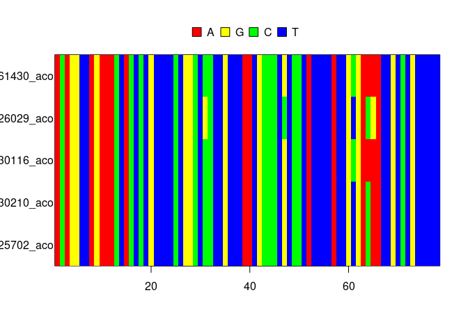

mcbette allows for doing a Model Comparison using babette (hence the name), that is, given a (say, DNA) alignment, it compares multiple phylogenetic inference models to find the model that is likeliest to generate that alignment. With this, one can find the phylogenetic inference model that is simple enough, but not too simple.
To do so, mcbette uses babette [Bilderbeek and Etienne, 2018] with the addition of using the BEAST2 [Bouckaert et al., 2019] nested sampling package as described in [Russell et al., 2019].
Installation
⚠️ mcbette only works on Linux and Mac.
mcbette depends on the rJava and Rmpfr packages.
On Linux, to install these, do (as root):
apt install r-cran-rjava libmpfr-devAfter this, installing mcbette is rather easy:
install.packages("mcbette")
remotes::install_github("richelbilderbeek/beastierinstall")
beastierinstall::install_beast2()
remotes::install_github("richelbilderbeek/mauricerinstall")
mauricerinstall::install_beast2_pkg("NS")Note that mcbette uses the non-CRAN extensions beastierinstall and mauricerinstall to install and uninstall BEAST2 and its packages.
Example
Suppose we have a DNA alignment, obtained by sequencing multiple species:
fasta_filename <- beautier::get_beautier_path("anthus_aco_sub.fas")
ape::image.DNAbin(ape::read.FASTA(fasta_filename))
Note that this alignment holds too little information to really base a publishable research on.
To create a posterior distribution of phylogenies from this alignment, one needs to specify an inference model. An inference model is (among others) a combination of a site model, clock model and tree model. See the ‘Available models’ section to see the available models.
In this example we let two inference models compete.
Here is the default inference model:
inference_model_1 <- beautier::create_ns_inference_model()
message(
paste(
inference_model_1$site_model$name,
inference_model_1$clock_model$name,
inference_model_1$tree_prior$name
)
)
#> JC69 strict yuleThe JC69 site model assumes that the four DNA nucleotides are equally likely to mutate from/to. The strict clock model assumes that mutation rates of all species are equal. The Yule tree model assumes that new species form at a constant rate for an extinction rate of zero.
The competing model has a different site, clock and tree model:
inference_model_2 <- inference_model_1
inference_model_2$site_model <- beautier::create_hky_site_model()
inference_model_2$clock_model <- beautier::create_rln_clock_model()
inference_model_2$tree_prior <- beautier::create_bd_tree_prior()The HKY site model assumes that DNA substitution rates differ between transitions (purine-to-purine or pyrimidine-to-pyrimidine) and translations (purine-to-pyrimidine or the other way around). The relaxed log-normal clock model assumes that mutation rates of all species are differ, where all these rates together follow a log-normal distribution. The birth-death tree model assumes that new species form and go extinct at a constant rate.
mcbette shows the evidence (also called marginal likelihood) for each inference model, which is the likelihood that a model has generated the data.
if (can_run_mcbette()) {
marg_liks <- est_marg_liks(
fasta_filename = fasta_filename,
inference_models = list(inference_model_1, inference_model_2)
)
}Here we display the marginal likelihoods as a table:
if (can_run_mcbette()) {
knitr::kable(marg_liks)
}The most important result are the model weights. When a model’s weight is very close to one, one would prefer to use that inference model in doing a Bayesian inference. If these model weights are rather similar, one could argue to use either model.
Here we display the marginal likelihoods as a barplot:
if (can_run_mcbette()) {
plot_marg_liks(marg_liks)
}Available models
The available site models:
beautier::get_site_model_names()
#> [1] "JC69" "HKY" "TN93" "GTR"The available clock models:
beautier::get_clock_model_names()
#> [1] "relaxed_log_normal" "strict"The available tree models:
beautier::get_tree_prior_names()
#> [1] "birth_death" "coalescent_bayesian_skyline"
#> [3] "coalescent_constant_population" "coalescent_exp_population"
#> [5] "yule"FAQ
Under which platforms does mcbette work?
mcbette only works on Linux and Mac, because BEAST2 package management only works on those platforms.
How do I let mcbette compare all models?
First, this is impossible, as there are infinitely many inference models possible.
inference_models <- list()
i <- 1
for (site_model in beautier::create_site_models()) {
for (clock_model in beautier::create_clock_models()) {
for (tree_prior in beautier::create_tree_priors()) {
inference_models[[i]] <- beautier::create_ns_inference_model(
site_model = site_model,
clock_model = clock_model,
tree_prior = tree_prior
)
i <- i + 1
}
}
}Now, inference_models holds a list of inference models, to be used with mcbette::est_marg_liks.
Error: dir.exists(examples_folder) is not TRUE
Currently, this line gives a suboptimal error message:
beastier::get_beast2_example_filename("Primates.nex")The error message is:
Error: dir.exists(examples_folder) is not TRUEThe error message it should display is:
Error: BEAST2 examples folder not found at path '[path]'.
Maybe BEAST2 is not installed?
Tip: run 'beastier::install_beast2()'This will be added in a future version of beastier.
Using an existing BEAST2 installation
When BEAST2 is already installed, yet at a non-default location, one can use the beast2_bin_path argument in create_mcbette_beast2_options.
Code of conduct
Please note that this package is released with a Contributor Code of Conduct. By contributing to this project, you agree to abide by its terms.
References
- Bilderbeek, Richel JC, and Rampal S. Etienne. “babette: BEAUti 2, BEAST 2 and Tracer for R.” Methods in Ecology and Evolution (2018). https://doi.org/10.1111/2041-210X.13032
- Bouckaert R., Vaughan T.G., Barido-Sottani J., Duchêne S., Fourment M., Gavryushkina A., et al. (2019) BEAST 2.5: An advanced software platform for Bayesian evolutionary analysis. PLoS computational biology, 15(4), e1006650.
- Russel, Patricio Maturana, et al. “Model selection and parameter inference in phylogenetics using nested sampling.” Systematic biology 68.2 (2019): 219-233.
beastier::remove_beaustier_folders()
beastier::check_empty_beaustier_folders()